an arm of a sea or ocean partly enclosed by land; larger than a bay
4.28
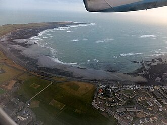
pit
/pit/
n. 深坑, 矿井, 果核, 地窖, 深渊, 绝境, 陷阱
a sizeable hole (usually in the ground)
4.27
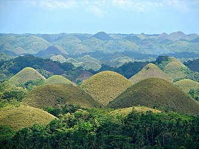
upgrade
/'ʌpgreid/
n. 上坡, 升级, 上升
an upward slope or grade (as in a road)
4.24
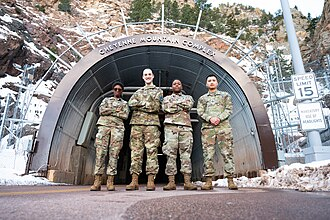
canal
/kә'næl/
n. 运河, 水道, 管, 沟渠
(astronomy) an indistinct surface feature of Mars once thought to be a system of channels; they are now believed to be an optical illusion
4.22
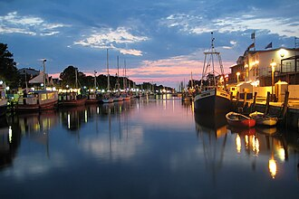
climb兼类词
/klaim/
n. 攀登, 爬升
an upward slope or grade (as in a road)
4.22
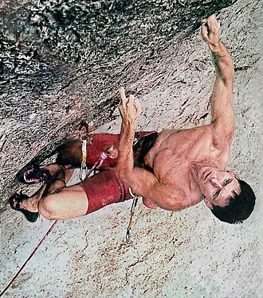
cave
/keiv/
n. 洞, 穴
a geological formation consisting of an underground enclosure with access from the surface of the ground or from the sea
4.2
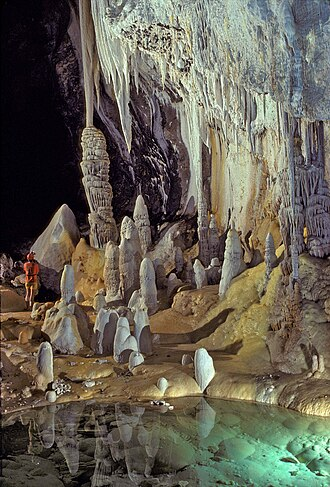
mere
/miә/
n. 小湖, 池塘
a small pond of standing water
4.13
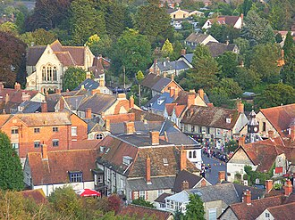
delta
/'deltә/
n. 三角洲, 希腊字母的第四个字
a low triangular area of alluvial deposits where a river divides before entering a larger body of water
4.12
ridge
/ridʒ/
n. 脊, 山脊, 山脉
a long narrow natural elevation or striation
4.12
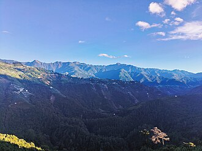
cliff
/klif/
n. 悬崖, 绝壁
a steep high face of rock
4.1
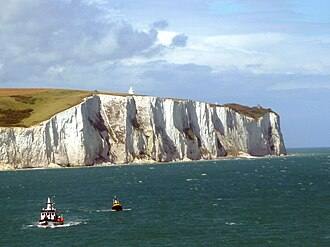
shallow
/'ʃælәu/
n. 水浅的地方, 浅滩
a stretch of shallow water
4.04
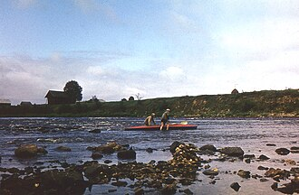
steep
/sti:p/
n. 浸渍, 悬崖
a steep place (as on a hill)
3.99
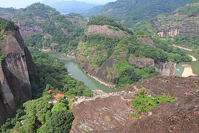
dale
/deil/
n. 小谷, 溪谷
an open river valley (in a hilly area)
3.98
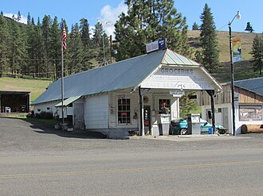
pond
/pɒnd/
n. 池塘
a small lake
3.98
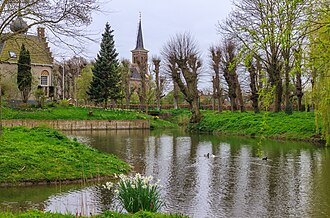
canyon
/'kænjәn/
n. 峡谷, 海底悬崖
a ravine formed by a river in an area with little rainfall
3.96
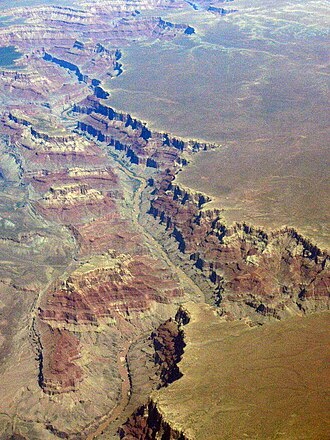
slope
/slәup/
n. 倾斜, 斜坡, 斜率, 扛枪姿势
an elevated geological formation
3.9
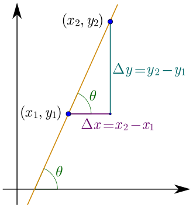
glen
/glen/
n. 峡谷, 幽谷
a narrow secluded valley (in the mountains)
3.87
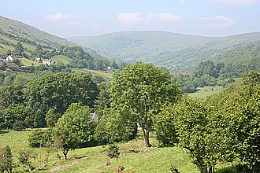
marsh
/mɑ:ʃ/
n. 沼泽, 湿地
low-lying wet land with grassy vegetation; usually is a transition zone between land and water
3.87
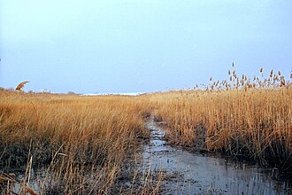
swamp
/swɒmp/
n. 沼泽, 进退两难的困境
low land that is seasonally flooded; has more woody plants than a marsh and better drainage than a bog
3.84
reef
/ri:f/
n. 暗礁, 礁, 缩帆
a submerged ridge of rock or coral near the surface of the water
3.83
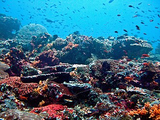
twilight zone复合词
/ˈtwailait zəun/
n. 城市贫穷地区
the lowest level of the ocean to which light can reach
3.77
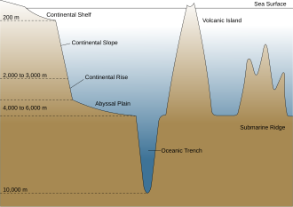
turf
/tә:f/
n. 草皮, 泥炭, 跑马场
surface layer of ground containing a mat of grass and grass roots
3.76
brook
/bruk/
n. 小溪
a natural stream of water smaller than a river (and often a tributary of a river)
3.74
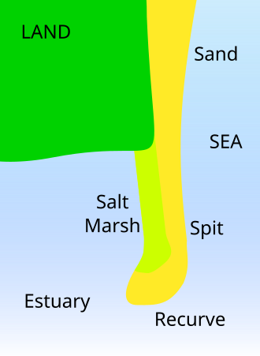
geological formation复合词
地质建造
(geology) the geological features of the earth
3.74
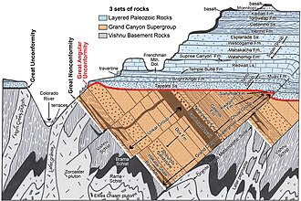
continental shelf复合词
[经] 大陆架
the relatively shallow (up to 200 meters) seabed surrounding a continent
3.72
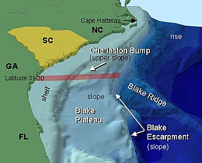
boulder
/'bәuldә/
n. 大圆石
a large smooth mass of rock detached from its place of origin
3.71
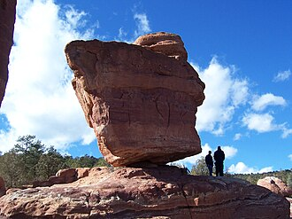
highland
/'hailәnd/
n. 高地, 苏格兰高地
elevated (e.g., mountainous) land
3.7
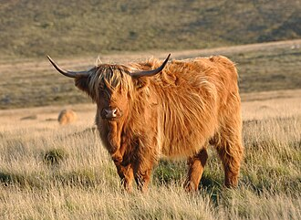
ski slope复合词
/ski: sləup/
n. [体]滑雪斜坡
a snow-covered slope for skiing
3.7
tidal river复合词
/ˈtaɪdl ˈrivə/
有潮河，感潮河
a stream in which the effects of the tide extend far upstream
3.68
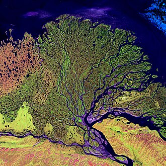
dell
/del/
n. 小谷, 小溪谷
a small wooded hollow
3.67
riverside
/'rivәsaid/
n. 河边, 河畔
the bank of a river
3.67
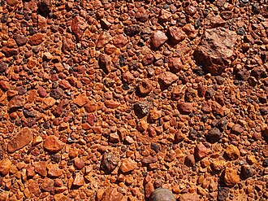
barrier reef复合词
/ˈbæriə ri:f/
n. 堤礁（珊瑚礁的一种）; 堡礁
a long coral reef near and parallel to the shore
3.66
continental slope复合词
[经] 大陆架坡
the steep descent of the seabed from the continental shelf to the abyssal zone
3.66
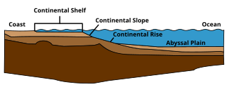
tidal stream复合词
/ˈtaɪdl stri:m/
潮流，潮汐河流
a stream in which the effects of the tide extend far upstream
3.65
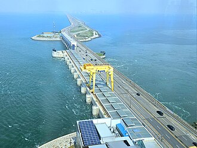
cove
/kәuv/
n. 山凹, 小湾
a small inlet
3.64
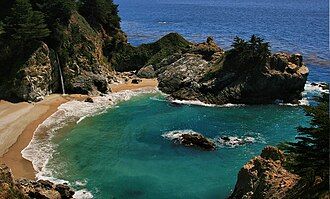
vale
/veil/
n. 谷, 溪谷, 告别
a long depression in the surface of the land that usually contains a river
3.62
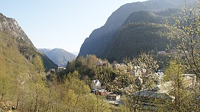
cavity
/'kæviti/
n. 洞, 空穴, 腔
a sizeable hole (usually in the ground)
3.61
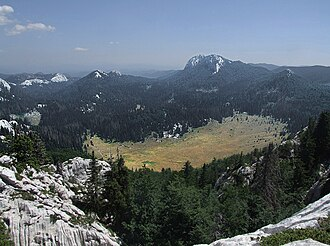
plateau
/plæ'tәu/
n. 高地, 高原, (上升后的)稳定水平
a relatively flat highland
3.61
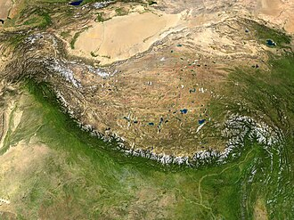
rift valley复合词
裂谷
a valley with steep sides; formed by a rift in the earth's crust
3.61
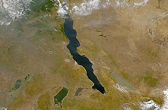
calculus
/'kælkjulәs/
n. 结石；微积分学
a hard lump produced by the concretion of mineral salts; found in hollow organs or ducts of the body
3.6
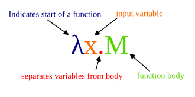
bladder stone复合词
[医] 膀胱石
a calculus formed in the bladder
3.59
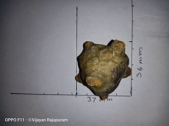
cultivated land复合词
/ˈkʌltəˌveɪtɪd lænd/
耕地; 农田; 熟地
arable land that is worked by plowing and sowing and raising crops
3.59
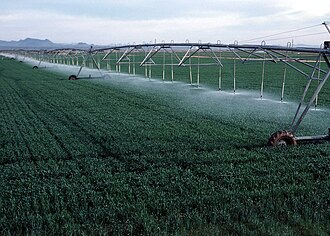
bluff
/blʌf/
n. 断崖, 绝壁, 吓唬
a high steep bank (usually formed by river erosion)
3.58
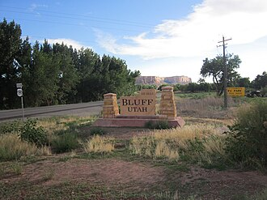
glacier
/'gleiʃә/
n. 冰川
a slowly moving mass of ice
3.58
mineral vein复合词
/ˈminərəl vein/
矿脉
a layer of ore between layers of rock
3.58
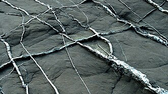
seaside兼类词
/'si:said/
n. 海滨
the shore of a sea or ocean regarded as a resort
3.58
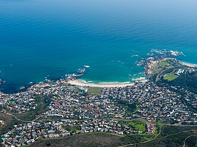
tor
/tɒ:/
n. 石山
a prominent rock or pile of rocks on a hill
3.57
crater
/'kreitә/
n. 火山口, 环行山, 弹坑
a bowl-shaped geological formation at the top of a volcano
3.55
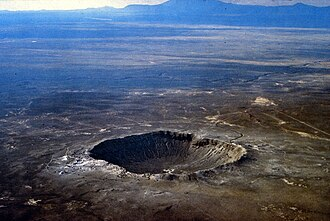
tidal basin复合词
/ˈtaɪdl ˈbeisn/
潮汐港湾
a basin that is full of water at high tide
3.55
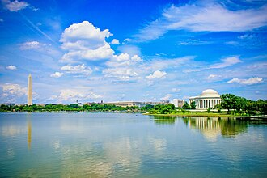
coral reef复合词
/ˈkɔrəl ri:f/
n. 珊瑚礁
a reef consisting of coral consolidated into limestone
3.54
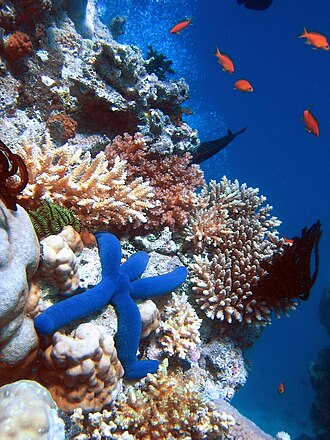
tar pit复合词
沥青坑
a natural accumulation of bitumens at the surface of the earth; often acts as a trap for animals whose bones are thus preserved
3.54
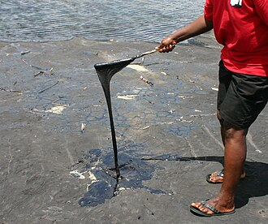
waterfall
/'wɒtәfɒ:l/
n. 瀑布
a steep descent of the water of a river
3.54
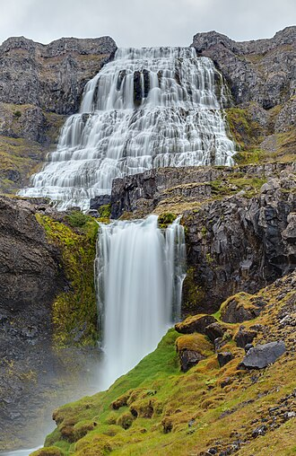
kettle hole复合词
/ˈketl həul/
锅形陷洞，锅穴，壶穴
(geology) a hollow (typically filled by a lake) that results from the melting of a mass of ice trapped in glacial deposits
3.51
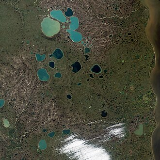
mesa
/'meisә/
n. 台面, 岩滩, 平顶山
flat tableland with steep edges
3.5
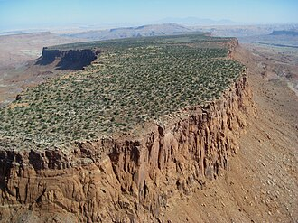
cascade
/kæ'skeid/
n. 小瀑布, 瀑布状物
a small waterfall or series of small waterfalls
3.47
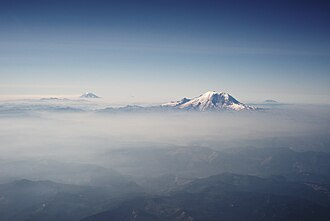
continental glacier复合词
/ˌkɔntəˈnentl ˈɡlæsjə/
大陆冰川
a glacier that spreads out from a central mass of ice
3.45
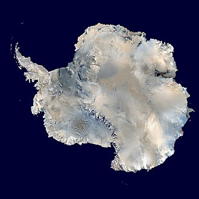
inlet
/'inlet/
n. 进口, 插入物
an arm off of a larger body of water (often between rocky headlands)
3.45
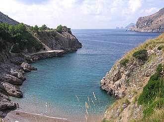
loch
/lɒk/
n. 湖, 海湾
a long narrow inlet of the sea in Scotland (especially when it is nearly landlocked)
3.45
groundwater level复合词
/ˈgraʊndˌwɔ:tə ˈlevl/
地下水面; 地下水水面; 地下水水位; 地下水位
underground surface below which the ground is wholly saturated with water
3.44
lagoon
/lә'^u:n/
n. 环礁湖, 近海岸的浅水区, 泻湖, 咸水湖
a body of water cut off from a larger body by a reef of sand or coral
3.43
polar glacier复合词
/ˈpəulə ˈɡlæsjə/
极地冰川
a glacier near the Arctic or Antarctic poles
3.43
trough
/trɒ:f/
n. 槽, 水槽, 饲料槽
a narrow depression (as in the earth or between ocean waves or in the ocean bed)
3.43
ascent
/ә'sent/
n. 上升, 提高, 攀登, 上坡路
an upward slope or grade (as in a road)
3.42
ledge
/ledʒ/
n. 突出部分, 暗礁, 矿层
a projecting ridge on a mountain or submerged under water
3.41
gorge
/gɒ:dʒ/
n. 峡谷, 凹槽, 塞饱, 咽喉
a deep ravine (usually with a river running through it)
3.4
ripple mark复合词
波痕
one of a series of small ridges produced in sand by water currents or by wind
3.4
hillside
/'hilsaid/
n. 山坡, 山腹
the side or slope of a hill
3.38
iceberg
/'aisbә:g/
n. 冰山, 冷冰冰的人
a large mass of ice floating at sea; usually broken off of a polar glacier
3.35
landfill
/'lændfil/
n. 垃圾堆；垃圾填埋地
a low area that has been filled in
3.35
bog
/bɒg/
n. 沼泽
wet spongy ground of decomposing vegetation; has poorer drainage than a swamp; soil is unfit for cultivation but can be cut and dried and used for fuel
3.34
lunar crater复合词
/ˈlju:nə ˈkreitə/
（月面）环形山; 月坑
a crater on the Earth's Moon
3.34
pebble
/'pebl/
n. 小圆石, 小鹅卵石, 水晶透镜, 碎石花纹
a small smooth rounded rock
3.34
sand dune复合词
n. 沙丘, 风吹积成的沙丘
a ridge of sand created by the wind; found in deserts or near lakes and oceans
3.33
berg
/bә:g/
n. 冰山
a large mass of ice floating at sea; usually broken off of a polar glacier
3.32
volcanic crater复合词
n. 火山囗
a bowl-shaped geological formation at the top of a volcano
3.32
bedrock
/bed'rɒk/
n. 基岩, 基本原理, 基础
solid unweathered rock lying beneath surface deposits of soil
3.28
dune
/dju:n/
n. 沙丘
a ridge of sand created by the wind; found in deserts or near lakes and oceans
3.28
estuary
/'estjuәri/
n. 河口, 港湾
the wide part of a river where it nears the sea; fresh and salt water mix
3.26
sod
/sɒd/
n. 草地, (铺草坪用的)草皮, 故乡
surface layer of ground containing a mat of grass and grass roots
3.25
artificial lake复合词
/ˌɑ:tiˈfiʃəl leik/
人工蓄水池
lake used to store water for community use
3.24
high sea复合词
公海
the open seas of the world outside the territorial waters of any nation
3.24
stepping stone复合词
/ˈstepiŋ stəun/
n. 垫脚石, 跳板
a stone in a marsh or shallow water that can be stepped on in crossing
3.24
swimming hole复合词
/ˈswɪmɪŋ həul/
<美>溪流和小河中可供游泳的深水潭
a small body of water (usually in a creek) that is deep enough to use for swimming
3.24
glacial boulder复合词
/ˈɡleisjəl ˈbəʊldə/
冰川漂砾
a boulder that has been carried by a glacier to a place far distant from its place of origin
3.22
laguna
/lә'ɡu:nә/
n. 小池；小湖
a body of water cut off from a larger body by a reef of sand or coral
3.21
borrow pit复合词
/ˈbɔrəu pit/
取土坑
a pit created to provide earth that can be used as fill at another site
3.2
creek bed复合词
河床；溪床
a channel occupied (or formerly occupied) by a stream
3.2
dry wash复合词
/drai wɔʃ/
干河床
the dry bed of an intermittent stream (as at the bottom of a canyon)
3.2
fire pit复合词
火山坑；熔岩穴
a pit whose floor is incandescent lava
3.2
hot spring复合词
温泉
a natural spring of water at a temperature of 70 F or above
3.2
ice cap复合词
/ais kæp/
n. 冰帽, 冰冠
a mass of ice and snow that permanently covers a large area of land (e.g., the polar regions or a mountain peak)
3.2
ice field复合词
/ais fi:ld/
n. 冰原（漂浮于海面上且直径大于8公里的平板形冰）
a large flat mass of ice (larger than an ice floe) floating at sea
3.2
kidney stone复合词
/ˈkidni stəun/
n. 肾结石; 肾石; 肾形石; 软玉
a calculus formed in the kidney
3.2
lake bed复合词
[机] 湖泊沉积矿
the bottom of a lake
3.2
lake bottom复合词
/leik ˈbɔtəm/
[医]湖底
the bottom of a lake
3.2
mountain chain复合词
山脉
a series of hills or mountains
3.2
mountain range复合词
/ˈmauntin reindʒ/
山脉; 山峦; 岭
a series of hills or mountains
3.2
mud puddle复合词
/mʌd ˈpʌdl/
泥潭
a puddle of mud
3.2
natural depression复合词
un. 天然凹陷
a sunken or depressed geological formation
3.2
natural spring复合词
/ˈnætʃərəl spriŋ/
[医]天然泉
a natural flow of ground water
3.2
rabbit hole复合词
兔子洞
a hole in the ground as a nest made by wild rabbits
3.2
river bottom复合词
/ˈrivə ˈbɔtəm/
河底
a channel occupied (or formerly occupied) by a river
3.2
salt marsh复合词
盐沼
low-lying wet land that is frequently flooded with saltwater
3.2
sand bar复合词
/sænd bɑ:/
沙洲
a bar of sand
3.2
seven seas复合词
n. 世界七大洋（即北冰洋, 南冰洋, 北大西洋, 南大西洋, 北太平洋, 南太平洋及印度洋）
an informal expression for all of the oceans of the world
3.2
swallow hole复合词
/ˈswɔləu həul/
石灰坑
a depression in the ground communicating with a subterranean passage (especially in limestone) and formed by solution or by collapse of a cavern roof
3.2
territorial waters复合词
[经] 领海
the waters surrounding a nation and its territories over which that nation exercises sovereign jurisdiction
3.2
thermal spring复合词
温泉
a natural spring of water at a temperature of 70 F or above
3.2
wall rock复合词
/wɔ:l rɔk/
n. 围岩
a rock immediately adjacent to a vein or fault
3.2
water hole复合词
/ˈwɔ:tə həul/
n. 水坑; 小湖; 冰上的窟窿; <美俚>大城市的区镇
a natural hole or hollow containing water
3.2
water table复合词
地下水位；[医] 地下水位
underground surface below which the ground is wholly saturated with water
3.2
incline
/in'klain/
n. 倾斜, 斜坡, 斜面
an elevated geological formation
3.15
ravine
/rә'vi:n/
n. 峡谷, 冲沟, 溪谷
a deep narrow steep-sided valley (especially one formed by running water)
3.15
tributary兼类词
/'tribjutәri/
n. 支流, 纳贡者, 属国
a branch that flows into the main stream
3.15
bayou
/'baiu:/
n. 支流
a swampy arm or slow-moving outlet of a lake (term used mainly in Mississippi and Louisiana)
3.14
hammock
/'hæmәk/
n. 吊床
a small natural hill
3.14
wetland
/'wetlænd/
n. 湿地, 沼泽地
a low area where the land is saturated with water
3.14
gully
/'gʌli/
n. 小峡谷, 排水沟
deep ditch cut by running water (especially after a prolonged downpour)
3.11
burrow
/'bʌrәu/
n. 洞穴, 藏身处
a hole made by an animal, usually for shelter
3.1
lakeside
/'leiksaid/
n. 湖边
the shore of a lake
3.1
butte
/bju:t/
n. 孤峰
a hill that rises abruptly from the surrounding region; has a flat top and sloping sides
3.09
alp
/ælp/
n. 高山
any high mountain
3.07
upland
/'ʌplәnd/
n. 山地, 高地, 高原
elevated (e.g., mountainous) land
3.07
sanitary landfill复合词
/ˈsænɪˌteri: ˈlændˌfɪl/
卫生垃圾堆
a low area where waste is buried between layers of earth
3.06
bonanza
/bәu'nænzә/
n. 富矿带, 带来好运的事物, 幸运
an especially rich vein of precious ore
3.05
rabbit burrow复合词
na. 野兔穴
a hole in the ground as a nest made by wild rabbits
3.05
peat bog复合词
/pi:t bɔɡ/
泥炭沼; 酸沼
wet spongy ground of decomposing vegetation; has poorer drainage than a swamp; soil is unfit for cultivation but can be cut and dried and used for fuel
3.02
lowland
/'lәulәnd/
n. 低地, 苏格兰低地
low level country
2.99
cirque
/sә:k/
n. 圆形场地, 圆环, 环形排列
a steep-walled semicircular basin in a mountain; may contain a lake
2.96
arroyo
/ә'rɒiәu/
n. 干涸沟壑, 旱谷, 小河
a stream or brook
2.95
mull
/mʌl/
n. 软薄布, 混乱
a term used in Scottish names of promontories
2.94
shoal
/ʃәul/
n. 浅水, 浅滩, 沙洲, 鱼群, 暗礁, 潜在危险
a sandbank in a stretch of water that is visible at low tide
2.93
seashore
/'siʃɒ:/
n. 海岸, 海滨
the shore of a sea or ocean
2.92
wormhole
/'wә:mhәul/
n. 蛀孔, 蛀洞
hole made by a burrowing worm
2.91
grotto
/'grɒtәu/
n. 洞穴, 岩穴, 洞室
a small cave (usually with attractive features)
2.9
knoll
/nәul/
n. 小山, 圆丘
a small natural hill
2.9
atoll
/'ætɒl/
n. 环状珊瑚岛, 环礁
an island consisting of a circular coral reef surrounding a lagoon
2.85
lough
/lɒk/
n. 湖, 港湾
a long narrow (nearly landlocked) cove in Ireland
2.84
badlands
/'bædlændz/
n. 崎岖地
deeply eroded barren land
2.83
fallow
/'fælәu/
n. 休耕地
cultivated land that is not seeded for one or more growing seasons
2.83
outpouring
/.aut'pɒ:riŋ/
n. 注出, 流出, 流露
a natural flow of ground water
2.82
fjord
/fjɔ:d/
n. 峡湾
a long narrow inlet of the sea between steep cliffs; common in Norway
2.81
flume
/flu:m/
n. 峡沟, 引水槽, 水道
a narrow gorge with a stream running through it
2.81
geyser
/'gaizә/
n. 喷泉, 间歇泉
a spring that discharges hot water and steam
2.8
wadi
/'wɒdi/
n. 干河床, 河道, 干谷, 流经干谷的溪流
gully or streambed in northern Africa and the Middle East that remains dry except during rainy season
2.8
wallow兼类词
/'wɒlәu/
n. 打滚, 泥坑, 堕落
a puddle where animals go to wallow
2.8
corrie
/'kɒri/
n. 山侧的圆形凹地
a steep-walled semicircular basin in a mountain; may contain a lake
2.79
permafrost
/'pә:mәfrɔ(:)st/
n. [地]永久冻结带
ground that is permanently frozen
2.79
gulch
/gʌlʃ/
n. 地沟, 冲沟
a narrow gorge with a stream running through it
2.78
riverbank
/'rivәbæŋk/
n. 河堤, 河岸
the bank of a river
2.77
mountainside
/'mauntinsaid/
n. 山腹, 山腰
the side or slope of a mountain
2.76
outcrop
/'autkrɒp/
n. 露出, 露头, 爆发
the part of a rock formation that appears above the surface of the surrounding land
2.76
precipice
/'presipis/
n. 悬崖, 绝壁, 险境
a very steep cliff
2.76
sinkhole
/'siŋkhәul/
n. 阴沟口, 污水坑
a depression in the ground communicating with a subterranean passage (especially in limestone) and formed by solution or by collapse of a cavern roof
2.76
quagmire
/'kwæ^maiә/
n. 沼泽地, 泥坑, 泥潭, 泥沼, 沼泽, 困境
a soft wet area of low-lying land that sinks underfoot
2.75
mire
/maiә/
n. 泥沼, 泥泞
a soft wet area of low-lying land that sinks underfoot
2.74
promontory
/'prɒmәntәri/
n. 岬, 海角
a natural elevation (especially a rocky one that juts out into the sea)
2.72
pothole
/'pɒthәul/
n. 壶穴
a pit or hole produced by wear or weathering (especially in a road surface)
2.71
lakeshore
/'leikʃɔ:(r)/
n. 湖岸
the shore of a lake
2.7
headland
/'hedlәnd/
n. 陆岬, 未耕地
a natural elevation (especially a rocky one that juts out into the sea)
2.69
littoral兼类词
/'litәrәl/
n. 沿海地, 沿海地区
the region of the shore of a lake or sea or ocean
2.69
dingle
/'diŋgl/
n. 小峡谷, 幽谷
a small wooded hollow
2.65
waterside
n. 水边, 海滨, 湖滨, 河滨
land bordering a body of water
2.65
caldera
/kæl'dєәrә/
n. 破火山口
a large crater caused by the violent explosion of a volcano that collapses into a depression
2.64
crag
/kræg/
n. 峭壁, 危岩
a steep rugged rock or cliff
2.64
escarpment
/is'kɑ:pmәnt/
n. 悬崖, 断崖, 绝壁
a long steep slope or cliff at the edge of a plateau or ridge; usually formed by erosion
2.62
foreshore
/'fɒ:ʃɒ:/
n. 前滩, 海滩
the part of the seashore between the highwater mark and the low-water mark
2.61
massif
/'mæsi:f/
n. 山丘
a block of the earth's crust bounded by faults and shifted to form peaks of a mountain range
2.6
tarn
/tɑ:n/
n. 冰斗湖, 山中小湖
a mountain lake (especially one formed by glaciers)
2.6
tali
/'teilai/
n. 斜面, 斜度
a sloping mass of loose rocks at the base of a cliff
2.55
foothill
/'futhil/
n. 山麓小丘
a relatively low hill on the lower slope of a mountain
2.52
lakefront
/'leikfrʌnt/
n. 湖边平地, 湖边, 湖畔
land bordering a lake
2.5
brae
/brei/
n. 斜坡, 山坡
a slope or hillside
2.43
maar
/mɑ:/
n. 低平火山口；小火山口
a flat-bottomed volcanic crater that was formed by an explosion; often filled with water
2.43
hillock
/'hilәk/
n. 小丘, 小高处, 土堆
a small natural hill
2.42
berm
/bә:m/
n. 城墙与外濠间之狭道, 崖径
a narrow ledge or shelf typically at the top or bottom of a slope